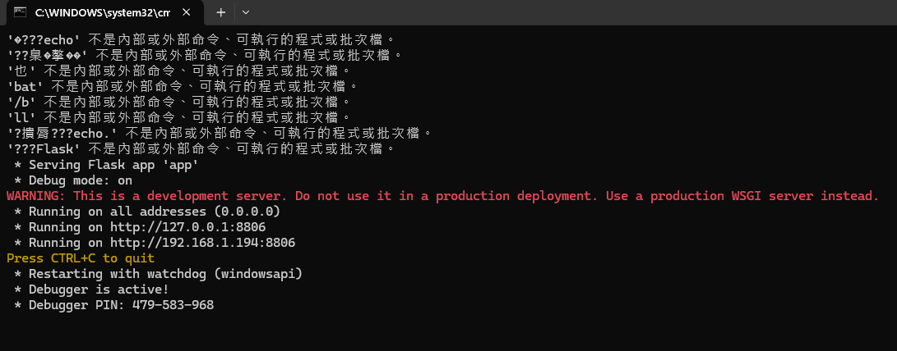
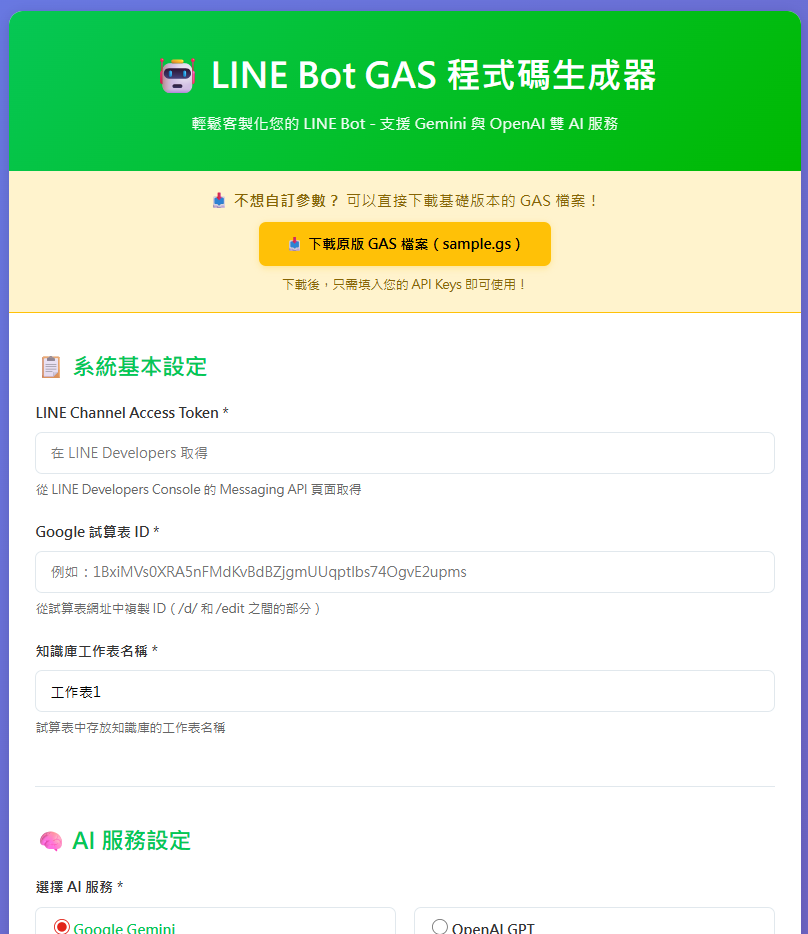

在開始之前，請確保你的電腦已具備：
Python 套件管理工具，通常隨 Python 一起安裝。
Chrome、Edge、Firefox 等現代瀏覽器皆可。
從 GitHub 下載本專案的完整檔案。
python --version 檢查！
git clone https://github.com/ChatGPT3a01/CH8-LINE-Bot-Generator.git cd CH8-LINE-Bot-Generator
Code 按鈕Download ZIPapp.py、requirements.txt、templates/ 等檔案和資料夾。
虛擬環境讓專案的套件獨立管理，不影響系統其他 Python 專案。
# 方法一：雙擊執行 setup_venv.bat # 方法二：手動執行 python -m venv venv venv\Scripts\activate pip install -r requirements.txt
# 方法一：執行 setup_venv.sh # 方法二：手動執行 python3 -m venv venv source venv/bin/activate pip install -r requirements.txt
# 雙擊執行 start.bat # 或手動執行： venv\Scripts\activate python app.py
# 執行 start.sh # 或手動執行： source venv/bin/activate python app.py
Running on http://0.0.0.0:8806
當你看到以下畫面，表示 Flask 伺服器已經準備就緒：

http://localhost:8806
成功開啟後，你會看到這個設計簡潔的設定表單：

這就是 LINE Bot 智慧客服生成器的主介面！
CH8-LINE-Bot-Generator/
├── app.py # Flask 主程式
├── requirements.txt # Python 套件需求
├── setup_venv.bat / .sh # 環境建置腳本
├── start.bat / .sh # 啟動腳本
│
├── templates/
│ └── index.html # 主頁面 HTML
│
├── static/
│ ├── css/style.css # 樣式檔案
│ ├── js/script.js # JavaScript 邏輯
│ └── sample.gs # GAS 範例檔案
│
└── slides/ # 簡報檔案
└── ...
確認 Python 已加入系統 PATH。重新安裝時勾選「Add Python to PATH」。
試著升級 pip：python -m pip install --upgrade pip
關閉其他使用此 port 的程式，或修改 app.py 中的 port 設定。
試試 http://127.0.0.1:8806，或檢查防火牆設定。
© 2026 自己架設 AI - 零基礎到大師 | Made with 曾慶良(阿亮老師) ❤️